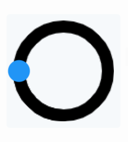

Arc
The arc consists of a background and a foreground arc. The foreground (indicator) can be touch-adjusted.
- Mode: The arc can be one of the following modes:
- Normal: The indicator arc is drawn from the minimum value to the current.
- Reverse: The indicator arc is drawn counter-clockwise from the maximum value to the current.
- Symmetrical: The indicator arc is drawn from the middle point to the current value.
- Value: Starter value.
- Angle: Sets the start/end angle in degrees.
- Background: Sets the start/end angle of the background in degrees.
- Rotate: Supports the offset from 0 to 360 degree position.
- Arc rounded: Selects the arcs rounded or perpendicular line ending.
Figure: Arc